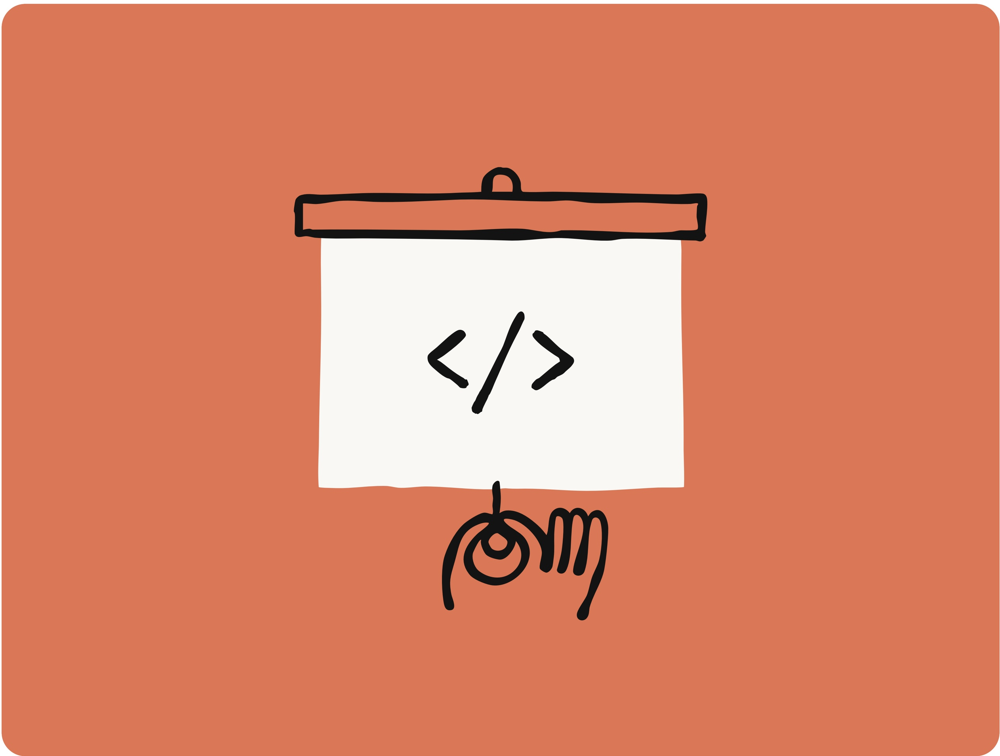
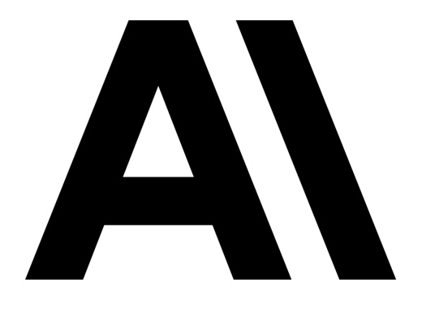

ANTHROPIC
How Anthropic teams use Claude Code
Contents
Claude Code for data infrastructure 3
Claude Code for product development 5
Claude Code for security engineering 7
Claude Code for inference 9
Claude Code for data science and visualization 11
Claude Code for API 13
Claude Code for growth marketing 15
Claude Code for product design 17
Claude Code for RL engineering 19
Claude Code for legal 21
Claude Code for data infrastructure
The Data Infrastructure team organizes all business data for teams across the company. They use Claude Code for automating routine data engineering tasks, troubleshooting complex infrastructure issues, and creating documented workflows for technical and non-technical team members to access and manipulate data independently.
Main Claude Code use cases
Kubernetes debugging with screenshots
When Kubernetes clusters went down and weren’t scheduling pods, the team used Claude Code to diagnose the issue. They fed screenshots of dashboards into Claude Code, which guided them through Google Cloud’s UI menu by menu until they found a warning indicating pod IP address exhaustion. Claude Code then provided the exact commands to create a new IP pool and add it to the cluster, bypassing the need to involve networking specialists.
Plain text workflows for finance team
The team showed finance team members how to write plain text files describing their data workflows, then load them into Claude Code to get fully automated execution. Employees with no coding experience could describe steps like “query this dashboard, get information, run these queries, produce Excel output,” and Claude Code would execute the entire workflow, including asking for required inputs like dates.
Codebase navigation for new hires
When new data scientists join the team, they’re directed to use Claude Code to navigate their massive codebase. Claude Code reads the Claude Code and files (documentation), identifies relevant files for specific tasks, explains data pipeline dependencies, and helps newcomers understand which upstream sources feed into dashboards. This replaces traditional data catalogs and discoverability tools.
End-of-session documentation updates
The team asks Claude Code to summarize completed work sessions and suggest improvements at the end of each task. This creates a continuous improvement loop where Claude Code helps refine the Claude Code.md documentation and workflow instructions based on actual usage, making subsequent iterations more effective.
Parallel task management across multiple instances
When working on long-running data tasks, they open multiple instances of Claude Code in different repositories for different projects. Each instance maintains full context, so when they switch back after hours or days, Claude Code remembers exactly what they were doing and when they left off, enabling true parallel workflow management without context loss.
Claude Code for data infrastructure
Team impact
Resolved infrastructure problems without specialized expertise
Resolved Kubernetes cluster issues that would normally require pulling in systems or networking team members, using Claude Code to diagnose problems and provide exact fixes.
Accelerated onboarding
New data analysts and team members can quickly understand complex systems and contribute meaningfully with extensive quick guidance.
Enhanced support workflow
Can process much larger data volumes and identify anomalies (like monitoring 200 dashboards) that would be impossible for humans to review manually.
Enabled cross-team self-service
Finance teams with no coding experience can now execute complex data workflows independently.
Top tips from the Data Infrastructure team
Write detailed Claude Code.md files
The better you document your workflows, tools, and expectations in Claude Code.md files, the better Claude Code performs. This made Claude Code excel at routine tasks like setting up new data pipelines when you have existing patterns.
Use MCP servers instead of CLI for sensitive data
They recommend using MCP servers rather than the BigQuery CLI to maintain better security control over what Claude Code can access, especially for handling sensitive data that requires logging or has potential privacy concerns.
Share team usage sessions
The team held sessions where members demonstrated their Claude Code workflows to each other. This helped spread best practices and showed different ways to use the tool they might not have discovered on their own.
Claude Code for product development
The Claude Code team uses their own products to build upgrades to Claude Code, expanding the product's enterprise capabilities and agentic loop functionalities.
Main Claude Code use cases
Fast prototyping with auto-accept mode
Engineers use Claude Code for rapid prototyping by enabling "auto-accept mode" (shift+tab) and setting up autonomous loops where Claude writes code, runs tests, and iterates continuously. They give Claude abstract problems they're unfamiliar with, let it work autonomously, then review the 80% complete solution before taking over for final refinements. Teams emphasize starting from a clean git state and committing checkpoints regularly so they can easily revert any incorrect changes if Claude goes off track.
Synchronous coding for core features
For more critical features touching the application's business logic, the team works synchronously with Claude Code, giving detailed prompts with specific implementation instructions. They monitor the process in real-time to ensure code quality, study Claude compliance, and project architecture while letting Claude handle the repetitive coding work.
Building Vim mode
One of their most successful async projects was implementing Vim key bindings for Claude Code. They asked Claude to build the entire feature (despite it not being a priority), and surprisingly, 70% of the final implementation came from Claude's autonomous work, requiring only a few iterations to complete.
Test generation and bug fixes
They use Claude Code to write comprehensive tests after implementing features and handle simple bug fixes identified in pull request reviews. They also leverage GitHub Actions integration to have Claude automatically address Pull Request comments like formatting issues or function renaming.
Codebase exploration
When working with unfamiliar codebases (like the monorepo or API side), the team uses Claude Code to quickly understand how systems work. Instead of waiting for Slack responses, they ask Claude directly for explanations and code references, saving significant time in context switching.
Claude Code for product development
Team impact
Faster feature implementation
Successfully implemented complex features like Vim mode with 70% of code written autonomously by Claude.
Improved development velocity
Can rapidly prototype features and iterate on ideas without getting bogged down in implementation details.
Enhanced code quality through automated testing
Claude generates comprehensive tests and handles routine bug fixes, maintaining high standards while reducing manual effort.
Better codebase exploration
Team members can quickly understand unfamiliar parts of the monorepo without waiting for colleague responses.
Top tips from the Claude Code team
Create self-sufficient loops
Set up Claude to verify its own work by running builds, tests, and lints automatically. This allows Claude to work longer autonomously and catch its own mistakes, especially effective when you ask Claude to generate tests before writing code.
Develop task classification intuition
Learn to distinguish between tasks that work well asynchronously (peripheral features, prototyping) versus those needing synchronous supervision (core business logic, critical fixes). Abstract tasks on the product's edges can be handled with "auto-accept mode," while core functionality requires closer oversight.
Form clear, detailed prompts
When components have similar names or functions, be extremely specific in your requests. The better and more detailed your prompt, the more you can trust Claude to work independently without unexpected changes to the wrong parts of the codebase.
Claude Code for security engineering
The Security Engineering team focuses on securing the software development lifecycle, supply chain security, and development environment security
They use Claude Code extensively for writing and debugging code.
Main Claude Code use cases
Complex infrastructure debugging
When working on incidents, they first Claude Code stack traces and documentation, adding it to trace control flow through the codebase. This significantly reduces time-to-resolution for production issues, allowing them to understand problems that would normally take 10-15 minutes of manual code scanning in about 5 minutes.
Terraform code review and analysis
For infrastructure changes requiring security approval, they copy Terraform plans into Claude Code to ask "What's this going to do? Am I going to regret this?" This creates tighter feedback loops and makes it easier for the security team to quickly review and approve infrastructure changes, reducing bottlenecks in the development process.
Documentation synthesis and runbooks
They have Claude Code ingest multiple documentation sources and create markdown runbooks, troubleshooting guides, and overviews. They use these condensed documents as context for debugging real issues, creating a more efficient workflow than searching through full knowledge bases.
Test-driven development workflow
Instead of their previous "design doc -> janky code -> refactor -> give up on tests" pattern, they now ask Claude Code for pseudocode, guide it through test-driven development, and periodically check in to steer it when stuck, resulting in more reliable and testable code.
Context switching and project onboarding
When contributing to existing projects like "dependant" (a web application for security approval workflows), they use Claude Code to write, review, and execute specifications written in markdown and stored in the codebase, enabling meaningful contributions within days instead of weeks of context building.
Claude Code for security engineering
Team impact
Reduced incident resolution time
Infrastructure debugging that normally takes 10-15 minutes of manual code scanning now takes about 5 minutes.
Improved security review cycle
Terraform code reviews for security approval happen much faster, eliminating developer blocks while waiting for security team approval.
Enhanced cross-functional contribution
Team members can meaningfully contribute to projects within days instead of weeks of context building.
Better documentation workflow
Synthesized troubleshooting guides and runbooks from multiple sources create more efficient debugging processes.
Top tips from the security Engineering team
Use custom slash commands extensively
Security engineering uses 50% of all custom slash command implementations in the entire monorepo. These custom commands streamline specific workflows and speed up repeated tasks.
Let Claude talk first
Instead of asking targeted questions for code snippets, they now tell Claude Code to "commit your work as you go" and let it work autonomously with periodic check-ins, resulting in more comprehensive solutions.
Leverage it for documentation
Beyond coding, Claude Code excels at synthesizing documentation and creating structured outputs. They provide writing samples and formatting preferences to get documents they can immediately use in Slack, Google Docs, and other tools to avoid interface switching fatigue.
Claude Code for inference
Main Claude Code use cases
Codebase comprehension and onboarding
The team relies heavily on Claude Code to quickly understand the architecture when joining a complex codebase. Instead of manually searching GitHub repos, they ask Claude to find files which call specific functionalities, getting results in seconds rather than asking colleagues or searching manually.
Unit test generation with edge case coverage
After writing core functionality, they ask Claude to write comprehensive unit tests. Claude automatically includes missed edge cases, completing what would normally take significant mental energy in minutes, acting like a coding assistant they can review.
Machine learning concept explanation
Without a machine learning background, team members depend on Claude to explain model-specific functions and settings. What would require an hour of Google searching and reading documentation now takes 10-20 minutes, reducing research time by 80%.
Cross-language code translation
When testing functionality in different programming languages, they explain what they want to test and Claude writes the logic in the required language (like Rust), eliminating the need to learn new languages just for testing purposes.
Command recall and Kubernetes management
Instead of remembering complex Kubernetes commands, they ask Claude for the correct syntax, like "how to get all pods or deployment status," and receive the exact commands needed for their infrastructure work.
Team impact
Accelerated ML concept learning
Research time reduced by 80% - what took an hour of Google searching now takes 10-20 minutes.
Faster codebase navigation
Can find relevant files and understand system architecture in seconds instead of asking colleagues.
Comprehensive test coverage
Claude automatically generates unit tests with edge cases, relieving mental burden while maintaining code quality.
Language barrier elimination
Can implement functionality in unfamiliar languages like Rust without needing to learn it.
Top tips from the Inference team
Test knowledge base functionality first
Try asking various questions to see if Claude can answer faster than Google search. If it's faster and more accurate, it's a valuable time-saving tool for your workflow.
Start with code generation
Give Claude specific instructions and ask it to write logic, then verify correctness. This helps build trust in the tool's capabilities before using it for more complex tasks.
Use it for test writing
Having Claude write unit tests relieves significant pressure from daily development work. Leverage this feature to maintain code quality without spending time thinking through all test cases manually.
Claude Code for data science and visualization
Main Claude Code use cases
Building JavaScript/TypeScript dashboard apps
Despite knowing "very little JavaScript and TypeScript," the team uses Claude Code to build entire React applications for visualizing ML performance and training data. They give Claude control to write full applications from scratch, like a 5,000-line TypeScript app, without needing to understand the code themselves. This is critical because visualization apps are relatively low context and don't require understanding the entire monorepo, allowing rapid prototyping of tools to understand model performance during training and evaluations.
Handling repetitive refactoring tasks
When faced with merge conflicts or semi-complicated file refactoring that's too complex for editor macros but not large enough for major development effort, they use Claude Code like a "pair machine" - commit their state, let Claude work autonomously for 30 minutes, and either accept the solution or restart fresh if it doesn't work.
Creating persistent analytics tools instead of throwaway notebooks
Instead of building one-off Jupyter notebooks that get discarded, the team now uses Claude to build permanent React dashboards that can be reused across future model evaluations. This is important because understanding Claude's performance is "one of the most important things for the team" - they need to understand how models perform during training and evaluations, which "is actually non-trivial and simple tools can't get too much signal from looking at a single number go up."
Zero-dependency task delegation
For tasks in completely unfamiliar codebases or languages, they delegate entire implementation to Claude Code, leveraging its ability to gather context from the monorepo and execute tasks without their involvement in the actual coding process. This allows productivity in areas outside their expertise instead of spending time learning new technologies.
Team impact
Achieved 2-4x time savings
Routine refactoring tasks that were tedious but manageable manually are now completed much faster.
Built complex applications in unfamiliar languages
Created 5,000-line TypeScript applications despite having minimal JavaScript/TypeScript experience.
Shifted from throwaway to persistent tools
Instead of disposable Jupyter notebooks, now building reusable React dashboards for model analysis.
Direct model improvement insights
Firsthand Claude Code experience informs development of better memory systems and UX improvements for future model iterations.
Enabled visualization-driven decision making
Better understanding of Claude's performance during training and evaluations through advanced data visualization tools.
Top tips from the Data Science and ML Engineering teams
Treat it like a slot machine
Save your state before letting Claude work, let it run for 30 minutes, then either accept the result or start fresh rather than trying to wrestle with corrections. Starting over often has a higher success rate than trying to fix Claude's mistakes.
Interrupt for simplicity when needed
While supervising, don't hesitate to stop Claude and ask "Why are you doing this? Try something simpler." The model tends toward more complex solutions by default but responds well to requests for simpler approaches.
Claude Code for API
Main Claude Code use cases
First-step workflow planning
The team uses Claude Code as their "first stop" for any task, asking it to identify which files to examine for bug fixes, feature development, or analysis. This replaces the traditional time-consuming process of manually navigating the codebase and gathering context before starting work.
Independent debugging across codebases
The team now has the confidence to tackle bugs in unfamiliar parts of the codebase instead of asking others for help. They can ask Claude "Do you think you can fix this bug?" This is the behavior I'm seeing" and often get immediate progress, which wasn't feasible before given the time investment required.
Model iteration testing through dogfooding
Claude Code automatically uses the latest research model snapshots, making it their primary way of experiencing model changes. This gives them direct feedback on model behavior changes during development cycles, which they hadn't experienced before during previous launches.
Eliminating context-switching overhead
Instead of copying code snippets and dragging files into Claude.ai while explaining problems extensively, they can ask questions directly in Claude Code without additional context gathering, significantly reducing mental overhead.
Claude Code for API
Team impact
Increased confidence in tackling unfamiliar areas
Team members can independently debug bugs and investigate incidents in unfamiliar codebases.
Significant time savings in context gathering
Eliminated the overhead of copying code snippets and dragging files into Claude.ai, reducing mental context-switching burden.
Faster rotation onboarding
Engineers rotating to new teams can quickly navigate unfamiliar codebases and contribute meaningfully without extensive colleague consultation.
Enhanced developer happiness
Team reports feeling happier and more productive with reduced friction in daily workflows.
Top tips from the API Knowledge team
Treat it as an iterative partner, not a one-shot solution
Rather than expecting Claude to solve problems immediately, approach it as a collaborator you iterate with. This works better than trying to get perfect solutions on the first try.
Use it for building confidence in unfamiliar areas
Don't hesitate to tackle bugs or investigate incidents outside your expertise - Claude Code makes it feasible to work independently in areas that would normally require extensive context building.
Start with minimal information
Begin with just the bare minimum of what you need and let Claude guide you through the process, rather than front-loading extensive explanations.
Claude Code for growth marketing
Main Claude Code use cases
Automated Google Ads creative generation
The team built an agentic workflow that processes CSV files containing hundreds of existing ads with performance metrics, identifies underperforming ads for iteration, and generates new variations that meet strict character limits (30 characters for headlines, 90 for descriptions). Using two specialized sub-agents (one for headlines, one for descriptions), the system can generate hundreds of new ads in minutes instead of requiring manual creation across multiple campaigns. This has enabled them to test and iterate at scale, something that would have taken a significant amount of time to achieve previously.
Figma plugin for mass creative production
Instead of manually duplicating and editing static images for paid social ads, they developed a Figma plugin that identifies frames and programmatically generates up to 10x variations for re-appropriating headlines and descriptions, reducing what would take hours of copy-pasting to half a second per batch. This enables 10x creative output, allowing the team to test vastly more creative variations across key social channels.
Meta Ads MCP server for campaign analytics
They created an MCP server integrated with Meta Ads API to query campaign performance, spending data, and ad effectiveness directly within the Claude Desktop app, eliminating the need to switch between platforms for performance analysis, saving critical time where every efficiency gain translates to better ROI.
Advanced prompt engineering with memory systems
They implemented a rudimentary memory system that allows log hypotheses and experiments across ad iterations, allowing the system to pull previous test results into context when generating new variations, creating a self-improving test framework. This enables systematic experimentation that would be impossible to track manually.
Claude Code for growth marketing
Team impact
Dramatic time savings on repetitive tasks
Ad copy reduction from 2 hours to 15 minutes, freeing up time for strategic work.
10x increase in creative output
The team can now test vastly more ad variations across channels with automated generation and Figma integration.
Operating like a larger team
The team can handle tasks that traditionally required dedicated engineering resources.
Strategic focus shift
The team can spend more time on overall strategy and building agentic automation rather than manual execution.
Top tips from the Growth Marketing team
Identify API-enabled repetitive tasks
Look for workflows involving repetitive actions with tools that have APIs (like ad platforms, design tools, analytics platforms). These are prime candidates for automation and where Claude Code provides the most value.
Break complex workflows into specialized sub-agents
Instead of trying to handle everything in one prompt or workflow, create separate agents for specific tasks (like their headline agent vs. description agent). This makes debugging easier and improves output quality when dealing with complex requirements.
Thoroughly brainstorm and prompt plan before coding
Spend significant time upfront using Claude.ai to think through your entire workflow, then have Claude.ai create a comprehensive prompt and code structure for Claude Code to reference. Also, work step-by-step rather than asking for one-shot solutions to avoid getting overwhelmed by complex tasks.
Claude Code for product design
The Product Design team
supports Claude Code, Claude.ai and the Anthropic AI in specializing in building AI products. Even non-developers can use Claude Code to bridge the traditional gap between design and engineering, enabling direct implementation of their design vision without extensive back-and-forth with engineers.
Main Claude Code use cases
Front-end polish and state management changes
Instead of creating extensive design documentation and going through multiple rounds of feedback with engineers for visual tweaks (typefaces, colors, spacing), they now directly implement these changes using Claude Code. Engineers noted they're making "large state management changes that you typically wouldn't see a designer making," enabling them to achieve the exact quality they envision.
GitHub Actions automated ticketing
Using Claude Code's GitHub integration, they can simply file issues/ tickets describing needed changes, and Claude automatically proposes code solutions without having to open Claude Code, creating a seamless bug-fixing and feature refinement workflow for their persistent backlog of polish tasks.
Rapid interactive prototyping
By pasting mockup images into Claude Code, they generate fully functional prototypes that engineers can immediately understand and iterate on, replacing the traditional cycle of static Figma designs that required extensive explanation and translation to working code.
Edge case discovery and system architecture understanding
They use Claude Code to map out error states, logic flows, and different system statuses, allowing them to identify edge cases during design rather than discovering them later in development, fundamentally improving the quality of their initial designs.
Complex copy changes and legal compliance
For tasks like removing "research preview" messaging across the entire codebase, they used Claude Code to find all instances, review surrounding copy, coordinate changes with legal in real-time, and implement updates - a process that took two 30-minute calls instead of a week of back-and-forth coordination.
Claude Code for product design
Team impact
Transformed core workflow
Claude Code becomes a primary design tool, with Figma and Claude Code open 80% of the time.
2-3x faster execution
Visual and state management changes that previously required extensive back-and-forth with engineers now implemented directly.
Weeks to hours cycle time
Complex projects like GA launch messaging that would take a week of coordination now completed in two 30-minute calls.
Two distinct user experiences
Developers get "augmented workflow" (faster execution), while non-technical users get "Holy crap, I'm a developer workflow" (entirely new capabilities previously impossible).
Improved design-engineering collaboration
Better communication and faster problem-solving because designers understand system constraints and possibilities upfront.
Top tips from the Product Design team
Get proper setup help from engineers
Have engineering teammates help with initial repository setup and permissions - the technical onboarding is challenging for non-developers, but once configured, it becomes transformative for daily workflow.
Use custom memory files to guide Claude's behavior
Create specific instructions telling Claude you're a designer with little coding experience who needs detailed explanations and smaller, incremental changes, dramatically improving the quality of Claude's responses and making it less intimidating.
Leverage image pasting for prototyping
Use Command + V to paste screenshots directly into Claude Code - it excels at reading designs and generating functional code, making it invaluable for turning static mockups into interactive prototypes that engineers can immediately understand and build upon.
Claude Code for RL engineering
The RL Engineering team
focuses on efficient sampling in RL and weight transfer across the cluster. They use Claude Code to medium features, debugging, and understanding complex codebases with an iterative approach that includes frequent checkpointing and rollbacks.
Main Claude Code use cases
Feature development with supervised autonomy
The team lets Claude write most of the code for small to medium features while providing oversight, such as implementing authentication mechanisms for weight transfer components. They work interactively, allowing Claude to take the lead but steering it when it goes off track.
Test generation and code review
After implementing changes themselves, they ask Claude Code to add tests or review their code. This automated testing workflow saves significant time on routine but important quality assurance tasks.
Debugging and error investigation
They use Claude Code to debug errors with mixed results - sometimes it identifies issues immediately and adds relevant tests, while other times it struggles to understand the problem, but overall provides value when it works.
Codebase comprehension and call stack analysis
One of the biggest changes in their workflow is using Claude Code to get quick summaries of relevant components and call stacks, replacing manual code reading or extensive debugging output generation.
Kubernetes operations guidance
They frequently ask Claude Code about Kubernetes operations that would otherwise require extensive Googling, getting immediate answers for configuration and deployment questions.
Claude Code for RL engineering
Development workflow impact
Experimental approach enabled
They now use a "try and rollback" methodology, frequently committing checkpoints so they can test Claude's autonomous implementation attempts and revert if needed, enabling more experimental.
Documentation acceleration
Claude Code automatically adds helpful comments that save significant time on documentation, though they note it sometimes adds comments in odd places or uses questionable code organization.
Speed-up with limitations
While Claude Code can implement small-to-medium PRs with "relatively little time" from them, they acknowledge it only works on first attempt about one-third of the time, requiring either additional guidance or manual intervention.
Top tips from the RL Engineering team
Customize your Claude.md file for specific patterns
Add instructions to your Claude.md file to prevent Claude from making repeated tool-calling mistakes, such as telling it to "run pytest not run and don't cd unnecessarily - just use the right path." This significantly improved consistency.
Use a checkpoint-heavy workflow
Regularly commit your work as Claude makes changes so you can easily roll back when experiments don't work out. This enables a more experimental approach to development without risk.
Try one-shot first, then collaborate
Give Claude a quick prompt and let it attempt the full implementation first. If it works (about one-third of the time), you've saved significant time. If not, then switch to a more collaborative, guided approach.
Claude Code for legal
Main Claude Code use cases
Custom accessibility solution for family members
Team members have built communication assistants for family members with speaking difficulties due to medical diagnoses. In just one hour, they created a predictive text app using native speech-to-text that suggests responses and speaks them using voice banks, solving gaps in existing accessibility tools recommended by speech therapists.
Legal department workflow automation
They created prototype "phone tree" systems to help team members connect with the right lawyer at Anthropic, demonstrating how legal departments can build custom tools for common tasks without traditional development resources.
Team coordination tools
Managers have built G Suite applications that automate weekly team updates and track legal review status across products, allowing lawyers to quickly flag items needing review through simple button clicks rather than spreadsheet management.
Rapid prototyping for solution validation
They use Claude Code to quickly build functional prototypes they can show to domain experts (like showing accessibility tools to UCSF specialists) to validate ideas and identify existing solutions before investing more time.
Claude Code for legal
Work style and impact
Planning in Claude.ai, building in Claude Code
They use a two-step process where they brainstorm and plan with Claude.ai first, then move to Claude Code for implementation, asking it to slow down and work step-by-step rather than outputting everything at once.
Visual-first approach
They frequently use screenshots to show Claude Code what they want interfaces to look like, then iterate based on visual feedback rather than describing features in text.
Prototype-driven innovation
They emphasize overcoming the fear of sharing "silly" or "toy" prototypes, as these demonstrations inspire others to see possibilities they hadn't considered.
Security and compliance awareness
MCP integration concerns
As product lawyers, they immediately identify security implications of deep MCP integrations, noting how conservative security postures will create barriers as AI tools access more sensitive systems.
Compliance tooling priorities
They advocate for building compliance tools quickly as AI capabilities expand, recognizing the balance between innovation and risk management.
Top tips from the Legal Department
Plan extensively in Claude.ai first
Use Claude's conversational interface to flesh out your entire idea before moving to Claude Code. Then ask Claude to summarize everything into a step-by-step prompt for implementation.
Work incrementally and visually
Ask Claude Code to slow down and implement one step at a time so you can copy-paste without getting overwhelmed. Use screenshots liberally to show what you want interfaces to look like.
Share prototypes despite imperfection
Overcome the urge to hide "toy" projects or unfinished work - sharing prototypes helps others see possibilities and sparks innovation across departments that don't typically interact.
原始文檔圖表


中文（繁體） 🇹🇼
ANTHROPIC
ANTHROPIC 團隊如何使用 Claude Code
內容
Claude Code 在資料基礎架構的應用 3
Claude Code 在產品開發的應用 5
Claude Code 在資安工程的應用 7
Claude Code 在推論的應用 9
Claude Code 在資料科學與視覺化的應用 11
Claude Code 在 API 的應用 13
Claude Code 在成長行銷的應用 15
Claude Code 在產品設計的應用 17
Claude Code 在 RL 工程的應用 19
Claude Code 在法務的應用 21
Claude Code 在資料基礎架構的應用
資料基礎架構團隊負責公司跨團隊的業務資料組織。他們使用 Claude Code 自動化例行的資料工程任務、排除複雜的基礎架構問題，以及建立有文件記錄的工作流程，讓技術和非技術團隊成員能夠獨立存取和操作資料。
主要 Claude Code 用途
Kubernetes 除錯（附螢幕截圖）
當 Kubernetes 叢集發生故障且無法排程 pod 時，團隊使用 Claude Code 來診斷問題。他們將儀表板的螢幕截圖餵給 Claude Code，Claude Code 逐一導覽 Google Cloud 的 UI 選單，直到他們找到一個指示 pod IP 位址耗盡的警告。接著，Claude Code 提供了建立新 IP 池並將其新增至叢集的確切指令，從而無需網絡專家的介入。
財務團隊的純文字工作流程
該團隊向財務團隊成員展示如何編寫描述其資料工作流程的純文字檔案，然後將其載入 Claude Code 以實現完全自動化的執行。沒有程式設計經驗的員工可以描述諸如「查詢此儀表板、取得資訊、執行這些查詢、產生 Excel 輸出」等步驟，Claude Code 將會執行整個工作流程，包括要求輸入日期等必要資訊。
新進人員的程式碼庫導覽
當新的資料科學家加入團隊時，他們會被指示使用 Claude Code 來導覽龐大的程式碼庫。Claude Code 會閱讀 Claude Code.md 文件（文件），識別特定任務的相關檔案，解釋資料管線依賴關係，並幫助新成員了解哪些上游來源會饋入儀表板。這取代了傳統的資料目錄和可發現性工具。
休息期間文件更新
團隊要求 Claude Code 總結已完成的工作階段，並在每個任務結束時提出改進建議。這建立了一個持續改進的循環，Claude Code 根據實際使用情況幫助完善 Claude Code.md 文件和工作流程說明，使後續的迭代更加有效。
多個實例間的平行任務管理
處理長時間執行的資料任務時，他們會在不同儲存庫中為不同專案開啟多個 Claude Code 實例。每個實例都保持完整的上下文，因此當他們在數小時或數天後切換回來時，Claude Code 會確切記住他們正在做什麼以及何時離開，從而實現無上下文遺失的真正平行工作流程管理。
Claude Code 在資料基礎架構的應用
團隊影響
在無專業技術知識的情況下解決基礎架構問題
透過 Claude Code 診斷問題並提供確切的修復方法，解決了通常需要系統或網絡團隊成員介入的 Kubernetes 叢集問題。
加速導入流程
新的資料分析師和團隊成員可以透過廣泛的快速指導，快速理解複雜系統並做出有意義的貢獻。
增強支援工作流程
能夠處理更大的資料量，並識別人類無法手動審核的異常（例如監控 200 個儀表板）。
實現跨團隊自助服務
沒有程式設計經驗的財務團隊現在可以獨立執行複雜的資料工作流程。
資料基礎架構團隊的頂級秘訣
編寫詳細的 Claude Code.md 檔案
您在 Claude Code.md 檔案中記錄工作流程、工具和預期的詳細程度越高，Claude Code 的表現就越好。這使得 Claude Code 在您已有模式時，能夠在設定新資料管線等例行任務方面表現出色。
使用 MCP 伺服器而非 CLI 處理敏感資料
他們建議使用 MCP 伺服器而非 BigQuery CLI，以保持對 Claude Code 可存取內容的更好安全控制，特別是在處理需要記錄或可能涉及隱私的敏感資料時。
分享團隊使用經驗
該團隊舉辦了成員之間互相展示 Claude Code 工作流程的會議。這有助於傳播最佳實踐，並展示了他們自己可能沒有發現的不同使用工具的方式。
Claude Code 在產品開發的應用
Claude Code 團隊利用自身產品來建構 Claude Code 的升級功能，擴展產品的企業級功能和代理循環（agentic loop）功能。
主要 Claude Code 用途
快速原型開發（自動接受模式）
工程師透過啟用「自動接受模式」（shift+tab）並設定自主循環，讓 Claude Code 進行快速原型開發，Claude Code 會編寫程式碼、運行測試並持續迭代。他們會給予 Claude Code 不熟悉的抽象問題，讓它自主工作，然後審查完成 80% 的解決方案，再接手進行最後的微調。團隊強調從乾淨的 git 狀態開始，並定期提交檢查點，以便在 Claude Code 偏離軌道時能夠輕鬆復原任何錯誤的變更。
同步程式碼編寫以構建核心功能
對於涉及應用程式業務邏輯的更關鍵功能，團隊會與 Claude Code 同步工作，提供詳細的提示和具體的實施說明。他們會即時監控進度，以確保程式碼品質、Claude Code 的合規性以及專案架構，同時讓 Claude Code 處理重複的程式碼編寫工作。
建構 Vim 模式
他們最成功的非同步專案之一是為 Claude Code 實作 Vim 鍵盤綁定。他們請 Claude 建置整個功能（儘管這不是優先事項），令人驚訝的是，最終實作的 70% 來自 Claude 的自主工作，僅需幾次迭代即可完成。
測試產生與錯誤修復
在實作功能後，他們使用 Claude Code 編寫完整的測試，並處理在 Pull Request 審查中發現的簡單錯誤修復。他們還利用 GitHub Actions 整合，讓 Claude 自動處理 Pull Request 的評論，例如格式問題或函數重新命名。
程式碼庫探索
在處理不熟悉的程式碼庫（例如 monorepo 或 API 端）時，團隊使用 Claude Code 快速了解系統的運作方式。與其等待 Slack 的回應，他們直接向 Claude 尋求解釋和程式碼參考，節省了大量的上下文切換時間。
Claude Code 用於產品開發
團隊影響
更快的實作速度
成功實作了 Vim 模式等複雜功能，其中 70% 的程式碼由 Claude 自主編寫。
提升開發速度
能夠快速原型化功能並迭代想法，而不會陷入實作細節的泥沼。
透過自動化測試提升程式碼品質
Claude 會生成完整的測試並處理例行的錯誤修復，在降低手動工作量的同時維持高標準。
更好的程式碼庫探索
團隊成員無需等待同事回應，即可快速了解 monorepo 中不熟悉的部分。
Claude Code 團隊的頂級秘訣
建立自給自足的循環
設定 Claude 自動執行建置、測試和 Lint，以驗證自身工作。這使得 Claude 能夠更長時間地自主工作並自行捕捉錯誤，尤其是在您要求 Claude 在編寫程式碼之前生成測試時，效果特別顯著。
培養任務分類的直覺
學會區分適合非同步工作的任務（周邊功能、原型製作）與需要同步監督的任務（核心業務邏輯、關鍵修復）。產品邊緣的抽象任務可以透過「自動接受模式」處理，而核心功能則需要更緊密的監督。
建立清晰、詳細的提示
當元件具有相似的名稱或功能時，請在您的請求中極度具體。您的提示越好、越詳細，您就越能信任 Claude 獨立工作，而不會對程式碼庫的錯誤部分產生意外變更。
Claude Code 用於資安工程
資安工程團隊專注於軟體開發生命週期、供應鏈安全以及開發環境安全的防護。他們廣泛使用 Claude Code 編寫和除錯程式碼。
主要 Claude Code 使用案例
複雜基礎架構除錯
在處理事件時，他們首先會將 Claude Code 的堆疊追蹤（stack traces）和文件，加入以追蹤程式碼庫的控制流程。這顯著縮短了生產問題的解決時間，讓他們能夠在約 5 分鐘內理解原本需要 10-15 分鐘手動掃描程式碼才能發現的問題。
Terraform 程式碼審查與分析
對於需要安全審核的基礎架構變更，他們將 Terraform 計劃（plans）複製到 Claude Code 中，詢問「這將做什麼？我會後悔嗎？」這創建了更緊密的反馈循環，讓資安團隊更容易快速審查和批准基礎架構變更，減少開發流程中的瓶頸。
文件整合與執行手冊（Runbooks）
他們讓 Claude Code 讀取多個文件來源，並建立 Markdown 格式的執行手冊、故障排除指南和概觀。他們將這些濃縮的文件作為除錯實際問題的上下文，創造了比搜尋完整知識庫更有效率的工作流程。
測試導向開發工作流程
與其先前的「設計文件 -> 粗糙程式碼 -> 重構 -> 放棄測試」模式不同，他們現在要求 Claude Code 生成偽程式碼，引導其完成測試導向開發，並在卡關時偶爾介入以引導方向，從而產生更可靠、更可測試的程式碼。
上下文切換與專案導入
在貢獻現有專案（如「dependant」，一個用於資安審核工作流程的 Web 應用程式）時，他們使用 Claude Code 編寫、審查和執行以 Markdown 編寫並儲存在程式碼庫中的規格，使他們能在幾天內做出有意義的貢獻，而不是數週的上下文建構。
Claude Code 用於資安工程
團隊影響
減少事件解決時間
原本需要 10-15 分鐘手動掃描程式碼的基礎架構除錯，現在約需 5 分鐘。
改善安全審查週期
用於安全審核的 Terraform 程式碼審查速度更快，消除了開發人員在等待資安團隊審核期間的阻礙。
增強跨職能貢獻
團隊成員能在幾天內做出有意義的專案貢獻，而非數週的上下文建構。
更好的文件工作流程
從多個來源整合的故障排除指南和執行手冊，創造了更有效率的除錯流程。
資安工程團隊的頂級秘訣
廣泛使用自訂斜線指令（Slash Commands）
資安工程團隊使用了整個 monorepo 中所有自訂斜線指令實作的 50%。這些自訂指令簡化了特定的工作流程，並加速了重複性任務。
讓 Claude 先開口
與其詢問特定程式碼片段的目標性問題，他們現在指示 Claude Code「在進行過程中提交您的工作」，並讓它自主工作，僅需定期檢查，從而產生更全面的解決方案。
利用其進行文件撰寫
除了寫程式碼，Claude Code 在整合文件和產出結構化內容方面也表現出色。他們提供撰寫範例和格式偏好，以便立即在 Slack、Google Docs 等工具中使用，避免介面切換的疲勞。
Claude Code 用於推論
Claude Code 的主要使用案例
程式碼庫理解與導入 (onboarding)
當團隊成員加入一個複雜的程式碼庫時，他們嚴重依賴 Claude Code 來快速理解架構。與手動搜尋 GitHub 儲存庫相比，他們可以直接詢問 Claude 尋找呼叫特定功能的檔案，並在幾秒鐘內得到結果，而不是詢問同事或手動搜尋。
包含邊緣案例涵蓋範圍的單元測試生成
在撰寫核心功能後，他們會要求 Claude 撰寫詳盡的單元測試。Claude 會自動包含遺漏的邊緣案例，在幾分鐘內完成原本需要大量心力的工作，就像一個可以供他們審閱的程式碼助理。
機器學習概念解釋
在沒有機器學習背景的情況下，團隊成員依賴 Claude 來解釋特定模型的函數和設定。這項工作原本需要花費一小時的時間進行 Google 搜尋和閱讀文件，現在只需要 10-20 分鐘，研究時間縮短了 80%。
跨語言程式碼翻譯
在測試不同程式語言的功能時，他們會說明測試目標，Claude 便會以所需的語言（例如 Rust）撰寫邏輯，無需為了測試目的而學習新語言。
指令回憶與 Kubernetes 管理
他們不再需要記憶複雜的 Kubernetes 指令，而是直接詢問 Claude 正確的語法，例如「如何取得所有 Pod 或部署狀態」，並收到基礎架構工作中所需的精確指令。
團隊影響
加速機器學習概念學習
研究時間減少 80% - 原本需要一小時 Google 搜尋的時間，現在只需 10-20 分鐘。
更快速的程式碼庫導航
可在幾秒鐘內找到相關檔案並理解系統架構，無需詢問同事。
全面的測試涵蓋範圍
Claude 自動生成包含邊緣案例的單元測試，減輕心智負擔的同時維持程式碼品質。
消除語言隔閡
無需學習，也能在不熟悉的語言（如 Rust）中實作功能。
推論團隊提供的頂級秘訣
先測試知識庫功能
嘗試提出各種問題，看看 Claude 能否比 Google 搜尋更快地回答。如果它更快且更準確，那麼它就是您工作流程中寶貴的省時工具。
從程式碼生成開始
給予 Claude 具體的指示，要求它撰寫邏輯，然後驗證其正確性。這有助於在將其用於更複雜的任務之前，建立對該工具功能的信任。
用於撰寫測試
讓 Claude 撰寫單元測試，可以減輕日常開發工作的巨大壓力。利用此功能，無需花費時間手動思考所有測試案例，即可維持程式碼品質。
Claude Code 用於資料科學與視覺化
Claude Code 的主要使用案例
建置 JavaScript/TypeScript 儀表板應用程式
儘管團隊對 JavaScript 和 TypeScript 的了解「非常有限」，但他們使用 Claude Code 建置完整的 React 應用程式，用於視覺化機器學習效能和訓練資料。他們讓 Claude 能夠從頭開始編寫完整的應用程式，例如一個 5,000 行的 TypeScript 應用程式，而無需自己理解程式碼。這一點至關重要，因為視覺化應用程式的上下文相對較低，不需要理解整個 monorepo，這使得能夠快速原型化工具，以便在訓練和評估期間理解模型效能。
處理重複的重構任務
當面臨合併衝突或半複雜的檔案重構時，其複雜度已超出編輯器巨集處理範圍，但又不足以構成重大開發工作時，他們將 Claude Code 視為「配對機」——提交當前狀態，讓 Claude 自主工作 30 分鐘，若解決方案不適用，則接受其結果或從頭開始。
創建持久的分析工具，而非一次性筆記本
團隊不再建置一次性且會被丟棄的 Jupyter 筆記本，而是使用 Claude 建置可重複使用的永久 React 儀表板，用於未來的模型評估。這一點很重要，因為理解 Claude 的效能是「團隊最重要的事項之一」——他們需要了解模型在訓練和評估期間的表現，「這實際上並不容易，簡單的工具無法從單一數字的上升中獲得太多訊號」。
無依賴性任務委派
對於完全不熟悉的程式碼庫或語言中的任務，他們將整個實作委派給 Claude Code，利用其從 monorepo 收集上下文的能力，無需他們參與實際編碼過程即可執行任務。這使他們能在專業知識之外的領域保持生產力，而不是花時間學習新技術。
團隊影響
實現 2-4 倍的時間節省
原本繁瑣但可手動完成的例行重構任務，現在完成速度快得多。
在不熟悉的語言中建置複雜的應用程式
儘管 JavaScript/TypeScript 經驗有限，仍建置了 5,000 行的 TypeScript 應用程式。
從一次性工具轉變為持久性工具
不再是可拋棄的 Jupyter 筆記本，現在為模型分析建置可重複使用的 React 儀表板。
直接的模型改進洞見
第一手的 Claude Code 經驗為未來模型迭代的記憶系統和使用者體驗改進提供了資訊。
實現視覺化驅動的決策制定
透過先進的資料視覺化工具，能更深入地了解 Claude 在訓練和評估期間的效能。
資料科學與機器學習工程團隊的頂級秘訣
像對待老虎機一樣對待它
在讓 Claude 處理之前儲存您的狀態，讓它執行 30 分鐘，然後接受結果或重新開始，而不是試圖修正。重新開始通常比嘗試修復 Claude 的錯誤有更高的成功率。
在需要時以簡潔中斷
在監督時，請隨時停止 Claude 並詢問「您為什麼這樣做？嘗試更簡單的方法。」該模型預設傾向於更複雜的解決方案，但對於簡化的請求回應良好。
Claude Code for API
主要 Claude Code 使用案例
第一步工作流程規劃
該團隊將 Claude Code 作為任何任務的「第一站」，要求它識別用於錯誤修復、功能開發或分析的文件。這取代了傳統上耗時的手動瀏覽程式碼庫並在開始工作前收集上下文的過程。
跨程式碼庫的獨立除錯
該團隊現在有信心處理程式碼庫不熟悉部分的錯誤，而不是尋求他人協助。他們可以詢問 Claude「您認為您可以修復這個錯誤嗎？這是我看到的行為」，並且通常會立即取得進展，這在以前由於所需的時間投入而不可行。
透過內部測試進行模型迭代測試
Claude Code 會自動使用最新的研究模型快照，使其成為體驗模型變更的主要方式。這使他們能夠在開發週期中直接獲得模型行為變更的相關資訊，這是他們在過去的發布過程中未曾體驗過的。
消除內容切換開銷
與其複製程式碼片段並將文件拖曳到 Claude.ai 中進行廣泛解釋，不如直接在 Claude Code 中提問，無需額外收集內容，顯著降低了心理開銷。
Claude Code for API
團隊影響
增加處理不熟悉區域的信心
團隊成員可以獨立地除錯錯誤並在不熟悉的程式碼庫中調查事件。
在內容收集方面節省大量時間
消除了將程式碼片段複製並將文件拖曳到 Claude.ai 中的開銷，減輕了心理內容切換負擔。
更快的輪調上線
輪調到新團隊的工程師可以快速瀏覽不熟悉的程式碼庫，並在無需與同事廣泛協商的情況下做出有意義的貢獻。
提升開發者滿意度
團隊報告稱，透過減少日常工作流程中的摩擦，他們感到更快樂、更有效率。
API 知識團隊的頂級提示
將其視為迭代夥伴，而非一次性解決方案
與其期望 Claude 立即解決問題，不如將其視為您需要迭代合作的夥伴。這比第一次就嘗試獲得完美的解決方案效果更好。
用於增強處理不熟悉區域的信心
請不要猶豫處理您專業知識之外的錯誤或調查事件 - Claude Code 使您能夠在通常需要大量內容建置的區域獨立工作。
從最少資訊開始
從您需要的最低限度開始，讓 Claude 引導您完成整個過程，而不是預先載入大量的解釋。
Claude Code for growth marketing
主要 Claude Code 使用案例
自動化 Google Ads 創意生成
該團隊構建了一個代理工作流程，該工作流程會處理包含數百個現有廣告及其績效指標的 CSV 文件，識別表現不佳的廣告進行迭代，並生成符合嚴格字元限制（廣告標題 30 個字元，說明 90 個字元）的新變體。透過使用兩個專業的子代理（一個用於廣告標題，一個用於說明），該系統可以在幾分鐘內生成數百個新廣告，而不是需要跨多個廣告活動進行手動創建。這使他們能夠大規模測試和迭代，這在以前需要大量時間才能實現。
用於大規模創意製作的 Figma 外掛程式
與其手動複製和編輯付費社交廣告的靜態圖像，他們開發了一個 Figma 外掛程式，該外掛程式可以識別框架並以程式化的方式生成多達 10 倍的變體，以重新利用廣告標題和說明，將原本需要數小時複製貼上縮短到每批半秒。這使得創意產出增加了 10 倍，讓團隊能夠在關鍵的社交管道上測試更多創意變體。
用於廣告活動分析的 Meta Ads MCP 伺服器
他們創建了一個與 Meta Ads API 集成的 MCP 伺服器，可以直接在 Claude Desktop 應用程式中查詢廣告活動績效、支出數據和廣告有效性，無需在平台之間切換進行績效分析，節省了關鍵時間，因為每一次效率提升都轉化為更好的投資報酬率。
具有記憶系統的高級提示工程
他們實現了一個基本的記憶系統，該系統允許記錄廣告迭代之間的假設和實驗，使系統在生成新變體時能夠將之前的測試結果納入內容，從而創建一個自我改進的測試框架。這使得系統化實驗成為可能，而這些實驗手動追蹤是不可能實現的。
Claude Code for growth marketing
團隊影響
重複性任務大幅節省時間
廣告文案從 2 小時減少到 15 分鐘，將時間釋放出來用於策略性工作。
創意產出增加 10 倍
透過自動生成和 Figma 集成，該團隊現在可以在各個管道上測試更多的廣告變體。
像更大的團隊一樣運作
該團隊能夠處理傳統上需要專門工程資源才能完成的任務。
策略重點轉移
該團隊可以花更多時間在整體策略和構建代理自動化上，而不是手動執行。
成長行銷團隊的頂級提示
識別啟用 API 的重複性任務
尋找涉及 API 工具（例如廣告平台、設計工具、分析平台）的重複性操作的工作流程。這些是自動化的首要候選者，也是 Claude Code 提供最大價值之處。
將複雜工作流程分解為專用子代理 (sub-agents)
與其試圖在單一提示 (prompt) 或工作流程中處理所有事務，不如為特定任務創建獨立的代理（例如，標題代理與描述代理）。這使得除錯 (debugging) 更容易，並在處理複雜需求時提高輸出品質。
在編寫程式碼前徹底腦力激盪並規劃提示
花費大量時間在 Claude.ai 上思考您的整個工作流程，然後讓 Claude.ai 創建一個供 Claude Code 參考的全面提示 (prompt) 和程式碼結構。此外，請逐步進行，而不是要求一次性解決方案，以避免被複雜任務壓垮。
Claude Code 應用於產品設計
產品設計團隊
支援 Claude Code、Claude.ai 和 Anthropic AI 專注於構建 AI 產品。即使是非開發人員也能使用 Claude Code 彌合設計與工程之間的傳統鴻溝，無需與工程師進行大量往返溝通，即可直接實現其設計願景。
Claude Code 的主要應用案例
前端細節優化與狀態管理變更
無需創建詳盡的設計文件，也無需與工程師就字體、顏色、間距等視覺調整進行多次審閱，現在他們直接使用 Claude Code 實現這些變更。工程師提到，他們正在進行「通常不會由設計師進行的大型狀態管理變更」，這使他們能夠實現所設想的精確品質。
GitHub Actions 自動化票務處理
透過使用 Claude Code 的 GitHub 整合功能，他們可以簡單地提交描述所需變更的問題/票務，Claude 會自動提出程式碼解決方案，而無需開啟 Claude Code，為他們持續積壓的細節優化任務創建無縫的錯誤修復和功能完善工作流程。
快速互動式原型製作
透過將設計稿圖片貼入 Claude Code，他們可以生成功能齊全的原型，工程師可以立即理解並進行迭代，取代了需要大量解釋和轉換為可執行程式碼的傳統靜態 Figma 設計週期。
邊緣案例 (edge case) 發現與系統架構理解
他們使用 Claude Code 來繪製錯誤狀態、邏輯流程和不同系統狀態的圖表，使他們能夠在設計階段識別邊緣案例，而不是在開發後期才發現，從根本上提高了他們初始設計的品質。
複雜的文案變更與法律合規
對於將整個程式碼庫中的「研究預覽」訊息移除等任務，他們使用 Claude Code 來查找所有出現的地方、審閱周圍的文案、與法務部門即時協調變更並實施更新——這個過程只需兩次 30 分鐘的通話，而不是一週的往返協調。
Claude Code 應用於產品設計
團隊影響
核心工作流程轉型
Claude Code 成為主要的設計工具，Figma 和 Claude Code 開啟時間佔 80%。
執行速度提升 2-3 倍
過去需要與工程師大量往返溝通的視覺和狀態管理變更，現在得以直接實現。
週到小時的週期時間
像 GA 發布訊息這樣的複雜專案，過去需要一週的協調時間，現在兩次 30 分鐘的通話即可完成。
兩種截然不同的使用者體驗
開發人員獲得「增強型工作流程」（執行速度更快），而技術能力較弱的使用者則獲得「哇！我變成開發人員的工作流程」（以前不可能實現的全新功能）。
改善設計與工程協作
更好的溝通和更快的解決問題速度，因為設計師能夠預先了解系統的限制和可能性。
產品設計團隊的頂級秘訣
獲得工程師的適當設定協助
讓工程師同事協助進行初始儲存庫設定和權限配置——對於非開發人員來說，技術入門具有挑戰性，但一旦配置完成，它將為日常工作流程帶來轉變。
使用自訂記憶體檔案 (custom memory files) 引導 Claude 的行為
創建特定指示，告知 Claude 您是一位編碼經驗較少、需要詳細解釋和小型、漸進式變更的設計師，這將大大提高 Claude 回應的品質，並使其不那麼令人生畏。
利用圖片貼入進行原型製作
使用 Command + V 將螢幕截圖直接貼入 Claude Code——它在讀取設計和生成可執行程式碼方面表現出色，對於將靜態設計稿轉化為工程師可以立即理解並在其上進行構建的互動式原型至關重要。
Claude Code 應用於 RL 工程
RL 工程團隊
專注於 RL 中的高效採樣和叢集 (cluster) 間的權重轉移。他們使用 Claude Code 來進行中等規模的功能開發、除錯 (debugging) 和理解複雜程式碼庫，採用包含頻繁檢查點 (checkpointing) 和回滾 (rollbacks) 的迭代方法。
Claude Code 的主要應用案例
透過監督式自主 (supervised autonomy) 進行功能開發
團隊讓 Claude 編寫大部分中小型功能的程式碼，同時提供監督，例如為權重轉移組件實施身份驗證 (authentication) 機制。他們以互動方式工作，讓 Claude 牽頭，但在它偏離軌道時進行引導。
測試生成與程式碼審查
在自行實施變更後，他們要求 Claude Code 添加測試或審查他們的程式碼。這種自動化測試工作流程節省了日常但重要的品質保證任務的大量時間。
除錯與錯誤調查
他們使用 Claude Code 來除錯錯誤，結果好壞參半——有時它能立即識別問題並添加相關測試，而其他時候它難以理解問題，但總體而言，當它奏效時能提供價值。
程式碼庫理解與呼叫堆疊分析
他們工作流程中最大的改變之一是使用 Claude Code 來快速摘要相關元件和呼叫堆疊，取代了手動閱讀程式碼或生成大量除錯輸出。
Kubernetes 操作指導
他們經常向 Claude Code 詢問 Kubernetes 操作相關問題，這些問題若沒有 Claude 則需要耗費大量時間搜尋，現在能立即獲得配置和部署問題的答案。
Claude Code 在 RL 工程中的應用
開發工作流程影響
實現實驗性方法
他們現在採用「試行並回滾」的方法，頻繁提交檢查點（checkpoints），以便測試 Claude 的自主實施嘗試，並在需要時進行復原，從而實現更多實驗性開發。
文件加速
Claude Code 會自動添加有用的註解，節省大量文件編寫時間，儘管他們也提到 Claude 有時會在不尋當的地方添加註解，或使用可疑的程式碼組織方式。
速度提升與限制
雖然 Claude Code 可以在他們花費「相對較少時間」的情況下實施小型到中型的 PR（Pull Request），但他們承認 Claude 僅有大約三分之一的時間能一次成功，這需要額外的指導或手動干預。
RL 工程團隊的頂級提示
自訂你的 Claude.md 檔案以獲得特定模式
在你的 Claude.md 檔案中添加指示，以防止 Claude 重複犯工具呼叫錯誤，例如指示它「執行 pytest 而非執行，且不要不必要地 cd（切換目錄）- 只需使用正確的路徑」。這極大地提高了程式碼的一致性。
使用密集檢查點的工作流程
在 Claude 進行變更時定期提交你的工作，以便在實驗不成功時輕鬆回滾。這使開發能以更實驗性的方式進行，而沒有風險。
先嘗試一次性提示，然後協作
給 Claude 一個簡短的提示，讓它先嘗試完整的實施。如果成功（大約有三分之一的機率），你就節省了大量時間。如果失敗，則切換到更具協作性和指導性的方法。
Claude Code 在法律領域的應用
主要 Claude Code 使用案例
為家庭成員客製化輔助溝通方案
團隊成員為因醫療診斷而有說話困難的家庭成員建構了溝通輔助工具。僅用一小時，他們就使用原生的語音轉文字（speech-to-text）創建了一個預測性文字應用程式，該應用程式會建議回覆並使用語音庫發聲，解決了語言治療師推薦的現有輔助工具的不足。
自動化法務部門工作流程
他們建立了原型「電話樹」系統，幫助團隊成員聯繫到 Anthropic 的合適律師，展示了法務部門如何在沒有傳統開發資源的情況下，為常見任務建構客製化工具。
團隊協調工具
管理者建構了 G Suite 應用程式，可自動化每週團隊更新並追蹤產品的法律審查狀態，讓律師能夠透過簡單的按鈕點擊快速標記需要審查的項目，而不是進行試算表管理。
快速原型驗證解決方案
他們使用 Claude Code 快速建構功能性原型，可以向領域專家展示（例如向 UCSF 專家展示輔助溝通工具），以驗證想法並在投入更多時間之前識別現有解決方案。
Claude Code 在法律領域的應用
工作風格與影響
在 Claude.ai 中規劃，在 Claude Code 中建構
他們採用兩步驟流程，先與 Claude.ai 進行腦力激盪和規劃，然後轉移到 Claude Code 進行實施，要求它放慢速度並逐步進行，而不是一次輸出所有內容。
視覺優先方法
他們經常使用螢幕截圖向 Claude Code 展示他們期望的介面外觀，然後根據視覺回饋進行迭代，而不是用文字描述功能。
原型驅動的創新
他們強調克服分享「愚蠢」或「玩具」原型的恐懼，因為這些演示能啟發他人看到他們之前未曾考慮到的可能性。
資安與合規意識
MCP 整合疑慮
身為產品律師，他們立即意識到深度 MCP 整合所帶來的資安影響，並指出保守的資安策略將會在 AI 工具存取更多敏感系統時造成障礙。
合規工具優先順序
隨著 AI 功能的擴展，他們主張快速建構合規工具，認識到創新與風險管理之間的平衡。
法務部門的頂級提示
先在 Claude.ai 中進行廣泛規劃
使用 Claude 的對話介面，在轉移到 Claude Code 之前，將你的整個想法細緻化。然後要求 Claude 將所有內容總結成一個逐步實施的提示。
逐步且視覺化地工作
要求 Claude Code 放慢速度，一次實施一個步驟，這樣你就可以複製貼上而不會感到不知所措。大量使用螢幕截圖來展示你期望的介面外觀。
即使不完美也要分享原型
克服隱藏「玩具」專案或未完成工作的衝動——分享原型有助於他人看到可能性，並激發不同部門之間的創新。